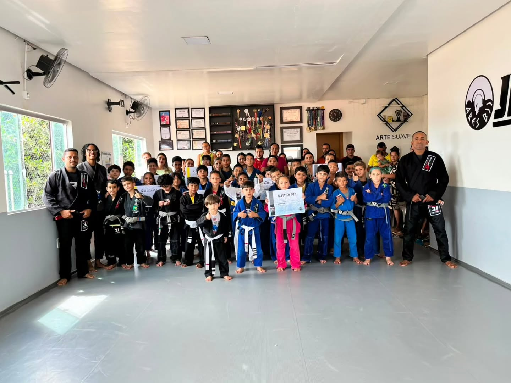
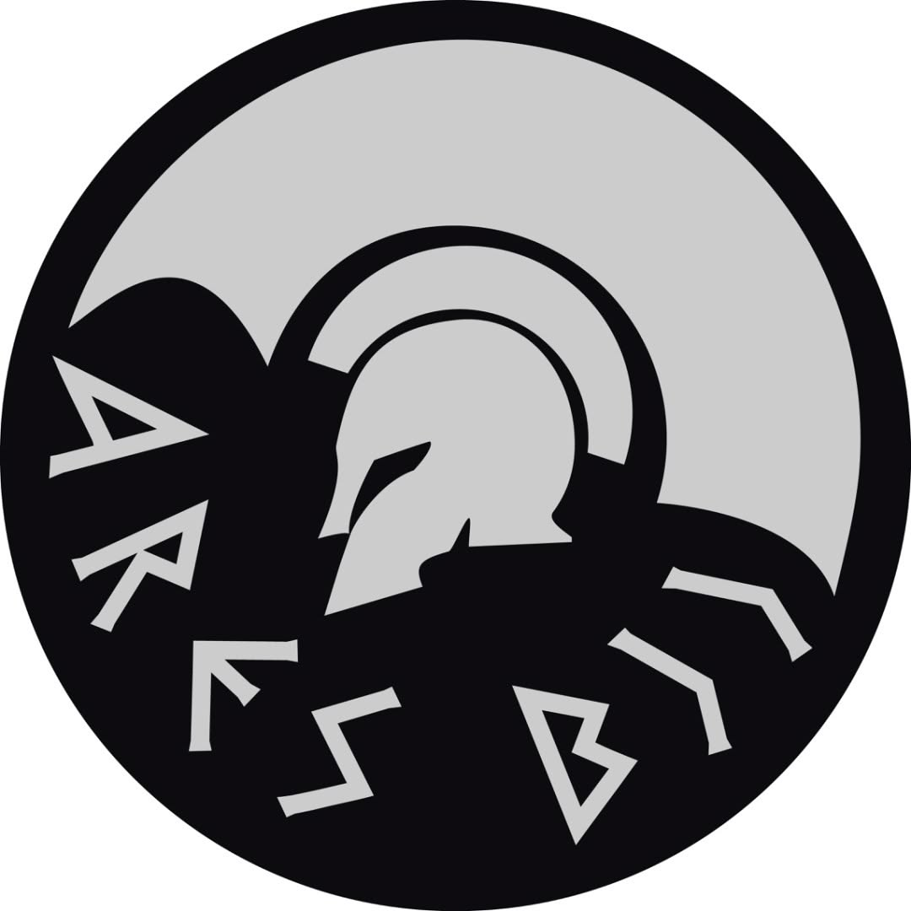
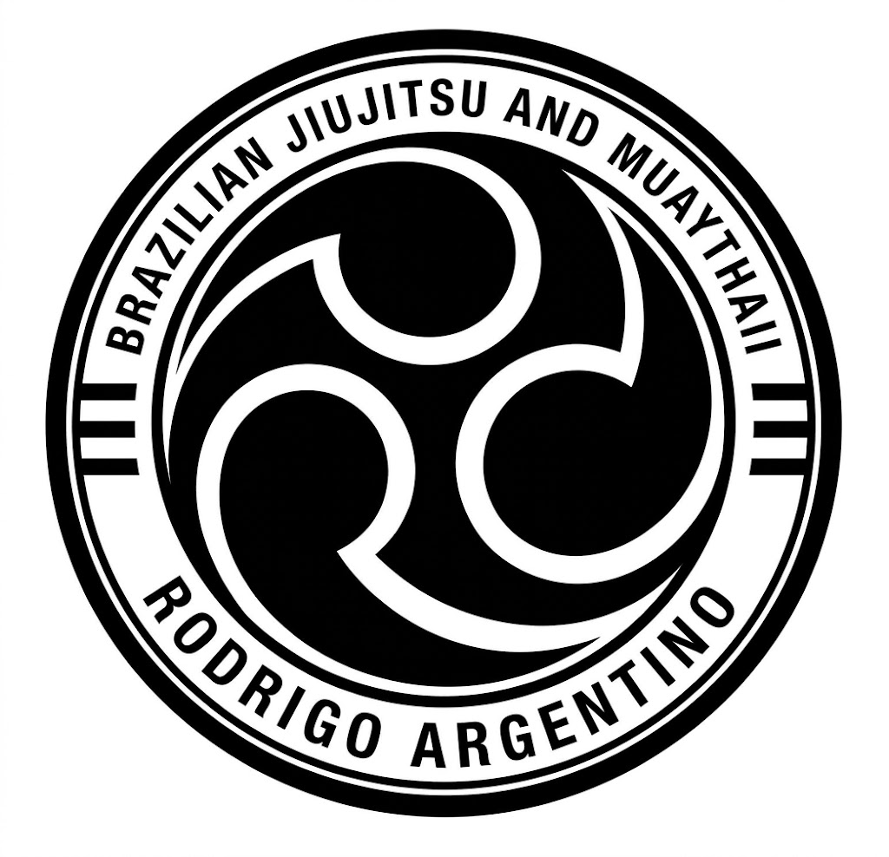
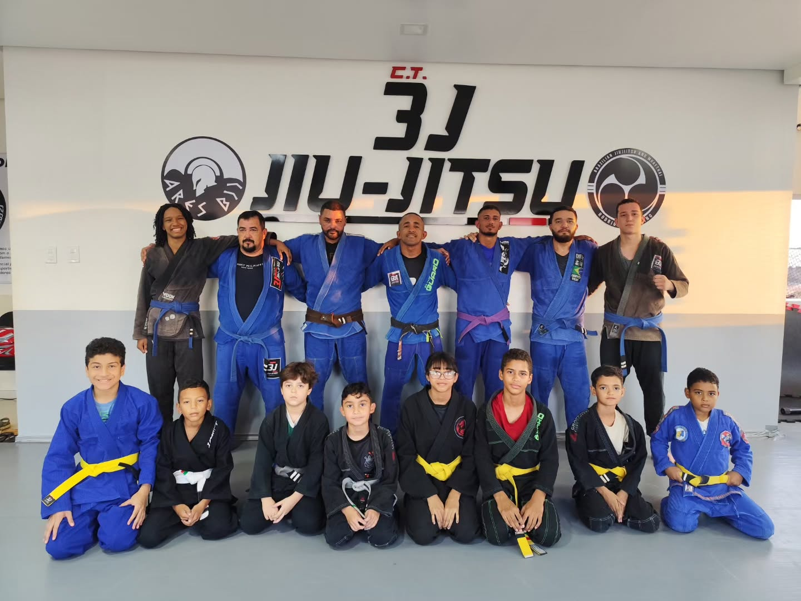

Compartilhe a ideia
Informe cidade e país, equipe anfitriã, período desejado e público esperado.
Jairo Costa é professor faixa-preta, atleta e treinador do CT-3J, equipe afiliada à Ares BJJ. O CT-3J está abrindo conversas com academias interessadas em seminários e intercâmbio no Brasil e no exterior.

Emblema Ares BJJ e marca de jiu-jitsu e muay thai enviada pela equipe.



Jairo Costa atua como professor, atleta e treinador faixa-preta. Seu trabalho une desenvolvimento técnico, formação esportiva e a crença no jiu-jitsu como ferramenta de transformação e inclusão social.
O CT-3J informa que Jairo contribuiu para formar mais de 30 medalhistas. Títulos, datas, categorias e detalhes da trajetória poderão ser incluídos após confirmação e organização dos registros.
Formato, tema, público e logística são combinados com a equipe anfitriã antes da divulgação do evento.
Informe cidade e país, equipe anfitriã, período desejado e público esperado.
Conversem sobre o tema, níveis dos participantes, duração e estrutura da atividade.
Agenda, idioma, deslocamento, hospedagem, condições e divulgação devem ser confirmados diretamente.
Isso ajuda a equipe a avaliar agenda e preparar uma proposta adequada.
Datas, temas, idioma e logística serão confirmados com Jairo. Não presumimos disponibilidade de tradução ou de uma língua específica; indique sua preferência no convite.
O seminário só deve ser anunciado depois que a equipe anfitriã receber a confirmação por escrito.
Compartilhe sua proposta com o CT-3J. A equipe responde para alinhar agenda e próximos passos.